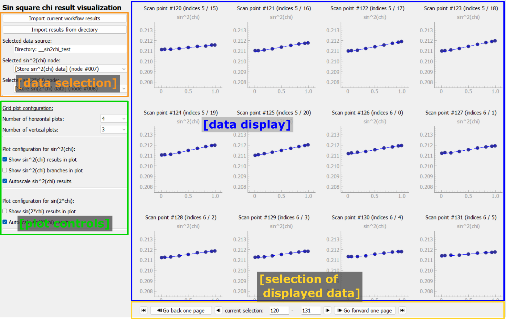

Sin square chi results visualization frame#
The Sin square chi results visualization frame allows to inspect the results of the Sin square chi analysis.
{kind=link}
The frame includes controls for selecting the input source and for controlling the display of the results on the left. The data is displayed on the right side in a grid of plots. Controls for browsing through the data are included on the bottom of the data display area.
Data selection#
Data for visualization can be selected in one of two ways: First, the current workflow results can be imported into this frame by clicking the Import current workflow results button. This will load a copy of the current workflow results. Second, results can be imported from a directory with exported pydidas results.
Tip
When importing results from disk, only the directory needs to be selected. Pydidas will determine which nodes include results and will make these available for visualization.
The name of the selected directory (or Workflow results in case of the current results) is displayed for convenience.
The nodes which contain the exported results of the sin^2(chi) fit and the sin(2*chi) fit are automatically detected and displayed in the respective drop-down boxes. A choice of no selection is equivalent to disabling plotting for that type of plot.
Plot controls#

The plot controls allow to modify how the data is displayed. Controls for the number of horizontal and vertical plots allow to change the number of rows and columns of plots in the grid.
Checkboxes allow disabling of showing of the selected sin^2(chi) and sin(2*chi) nodes completely. Note that when no data was selected through the no selection setting in the data selection, these entries will be ignored.
The sin^2(chi) fit configuration also has a toggle to display the positive and negative branches of the analysis. Unchecking this box will only plot the average data and the linear fit.

The autoscale checkboxes control the scaling. When autoscaling is enabled, all plots will be scaled to the same range, which is determined by the minimum and maximum of the data in all plots (of the same type). When autoscaling is disabled, the user can set the minimum and maximum values for the y-axis of each plot individually. Note that the x-axis is always autoscaled to the range (0, 1). A button allows to update the manual scales from the data. These can be further modified by the user.
Data display#

The data display area shows the results of the sin^2(chi) and sin(2*chi) fits, if selected in the data selection. Each plot has a small title with the type of plot. The grid of plots also includes titles with the scan point (i.e. the consecutive number in the acquisition sequence) as well as the indices of the point on each of the scan axes.
Panning and zooming of the plots is disabled by default to keep the scale of all plots comparable.
Data selection and navigation#

The bottom of the data display area includes controls for navigating through the data. The currently selected scan points are displayed in the center as the current selection. These can also be modified by the user which will update the displayed data. The buttons on the left and right allow to navigate through the data and are described in detail in the following table:
button |
description |
|---|---|
Go to the start of the scan and visualize the first scan points. |
|
Go back by one page. This will display the previous set of scan points in the grid of plots, i.e. all plots will be updated with the previous scan points. For example, if the grid inlcudes 3x5 plots, the previous 15 scan points will be displayed. |
|
Display the previous scan point in the grid of plots. This will update the first plot with previous scan point and all other plots will be shifted. |
|

|
Display the next scan point in the grid of plots. This will update all plots with the next scan point, i.e. the last plot will show the next scan point and the other plots will be shifted in the grid. |
Go forward by one page. This will display the next set of scan points in the grid of plots, i.e. all plots will be updated with the next scan points. For example, if the grid inlcudes 3x4 plots, the next 12 scan points will be displayed. |
|
Go to the end of the scan and visualize the last scan points. The last scan points will always be displayed in the last plot of the grid. The other plots will be updated with the previous scan points, as available. |